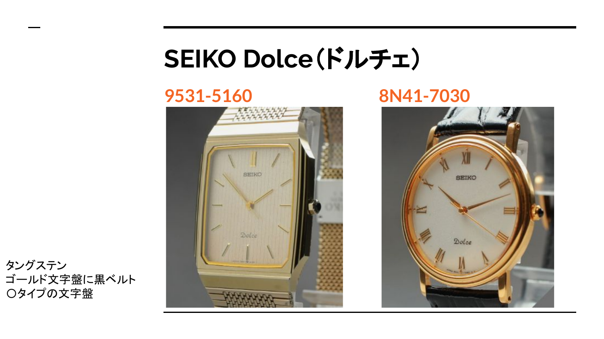
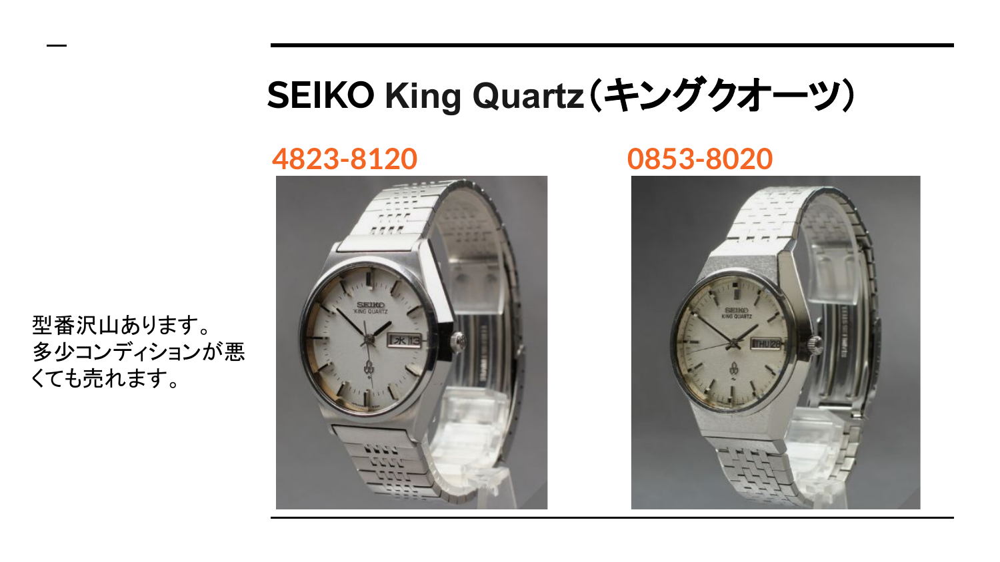
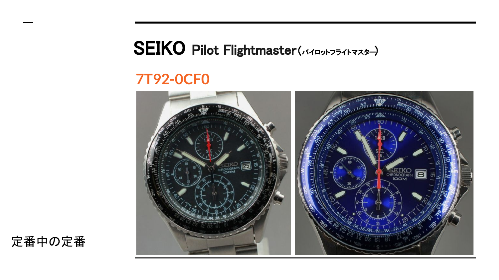

SEIKO Dolce
77317731-5120 / 7731-5240。定番中の定番。まずリサーチの基準にしやすいモデルです。
初心者が最初に覚えたいSEIKOの売れ筋型番を、特徴とリサーチ観点つきで整理しました。
SEIKOは型番が追いやすく、同シリーズの色違い・素材違い・状態違いを横展開しやすいブランドです。まず定番型番を覚えて、検索の軸を作ります。
7731-5120 / 7731-5240。定番中の定番。まずリサーチの基準にしやすいモデルです。
9531-5160 / 8N41-7030。タングステン、ゴールド文字盤、黒ベルトなど見た目の訴求がしやすい系統。
4823-8120 / 0853-8020。型番が多く、多少コンディションが悪くても動く例があるため幅広く確認。
7T92-0CF0。型番検索しやすく、商品説明で機能性を伝えやすいモデル。




SEIKOの次に、初心者が横展開しやすい3ブランドを確認します。